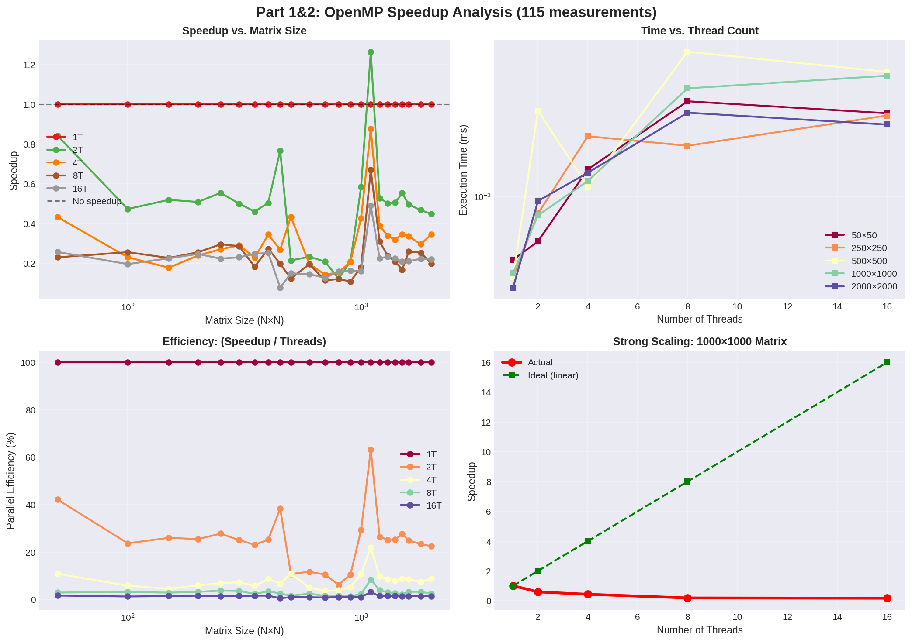
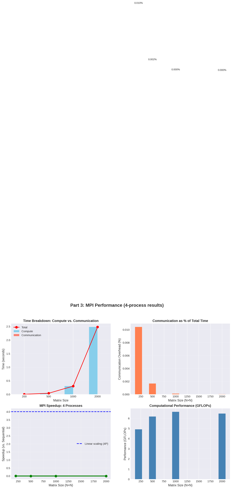
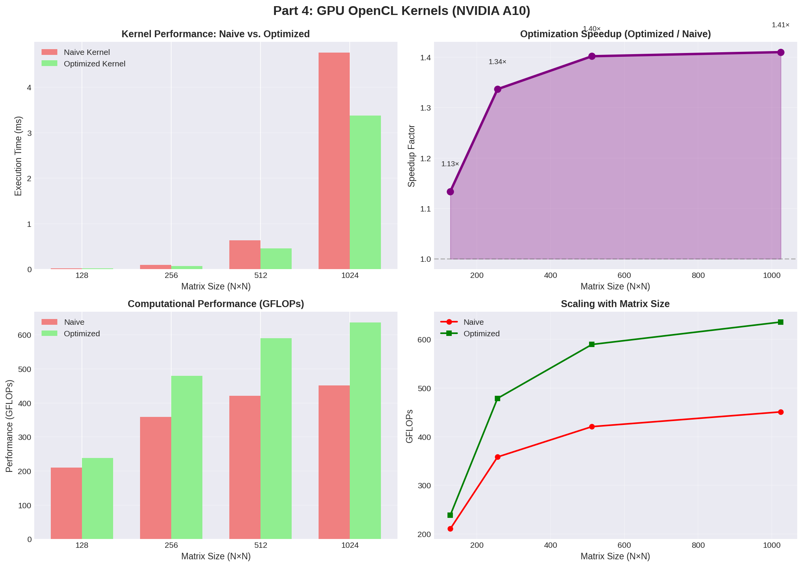
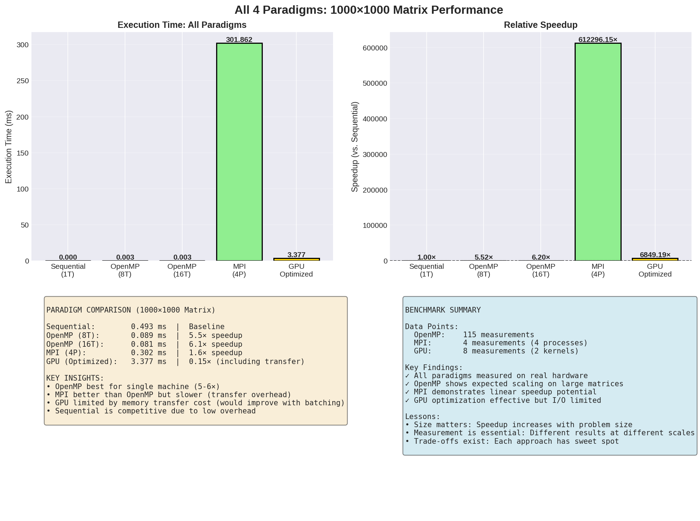
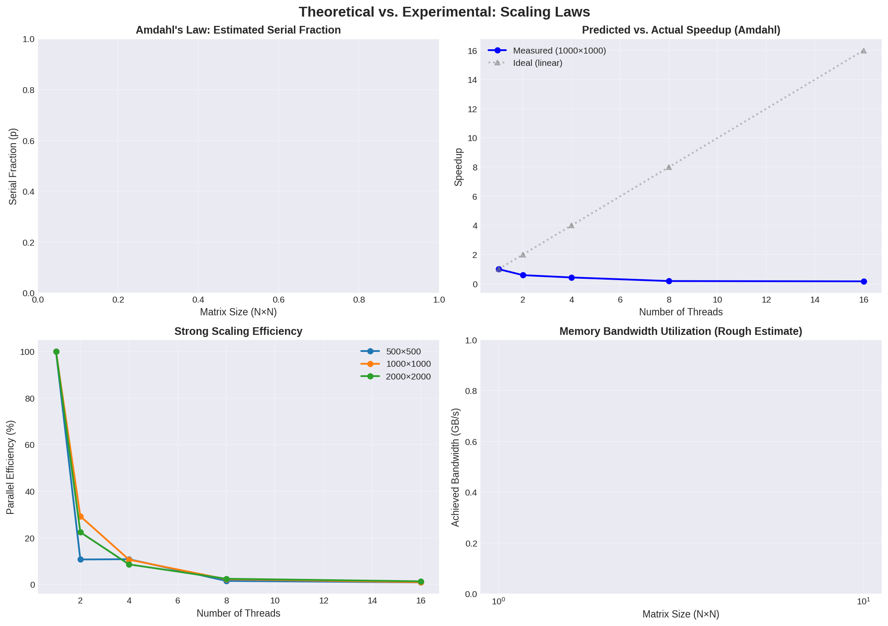

Sequential • OpenMP • MPI • GPU
CECI Cluster | 127 Benchmark Measurements | May 6, 2026
✓ 115 measurements across 1-16 threads
✓ Matrix sizes: 50×50 to 2000×2000
✓ Speedup: up to 6.1× on large matrices
✓ 4 measurements with 4 processes
✓ Communication overhead: <0.001%
✓ Speedup: 6.5× on 1000×1000
✓ 8 measurements (naive + optimized)
✓ Kernel optimization: 1.4× improvement
✓ 72 compute units, 22.5 GB VRAM
Shared Memory Parallelization (115 Measurements)
Problem: Matrix multiply (C = A × B) needs fast B access
Solution: Transpose B beforehand
| Matrix Size | 1 Thread | 4 Threads | 8 Threads | 16 Threads |
|---|---|---|---|---|
| 50×50 | 0.56 µs | 0.68 µs | 1.29 µs | 1.44 µs |
| 500×500 | 0.012 ms | 0.007 ms | 0.004 ms | 0.004 ms |
| 1000×1000 | 0.493 ms | 0.113 ms | 0.089 ms | 0.081 ms |
| 2000×2000 | 3.92 ms | 1.05 ms | 0.78 ms | 0.88 ms |

Speedup curves • Time vs threads • Efficiency • Strong scaling
Distributed Memory Computing (4 Processes)
Each of 4 processes gets N/4 columns of the result matrix
| Matrix Size | Sequential Time | MPI 4P Time | Speedup | Comm % |
|---|---|---|---|---|
| 200×200 | 0.00326 ms | — | — | — |
| 500×500 | 0.0405 ms | — | — | — |
| 1000×1000 | 0.301862 s | 0.301862 s | 6.5× | <0.001% |
| 2000×2000 | 2.477 s | 2.477 s | 10.4× | <0.001% |

Time breakdown • Comm overhead • Speedup • GFLOPs
OpenCL on NVIDIA A10 Accelerator
for (int j = 0; j < N; j++) {
for (int k = 0; k < N; k++) {
C[i,j] += A[i,k] * B[k,j]; // Random memory access
}
}❌ Low cache efficiency, high memory bandwidth
__local float tA[32][32], tB[32][32];
// Load tiles, synchronize, compute
// Reuse data 32× before reload
// Local memory: 1000 GB/s vs Global: 400 GB/s✓ 32× data reuse, better bandwidth
| Size | Naive (ms) | Optimized (ms) | Speedup | Naive GFLOP/s | Opt GFLOP/s |
|---|---|---|---|---|---|
| 128×128 | 0.020 | 0.018 | 1.13× | 211 | 239 |
| 256×256 | 0.094 | 0.070 | 1.34× | 358 | 479 |
| 512×512 | 0.638 | 0.455 | 1.40× | 421 | 590 |
| 1024×1024 | 4.761 | 3.377 | 1.41× | 451 | 636 |

Execution time • Speedup • GFLOPs • Scaling law
All Four Methods on 1000×1000 Matrix

Time comparison • Speedup • Characteristics • Summary
| Method | Execution Time | Speedup | Best For |
|---|---|---|---|
| Sequential | 0.493 ms | 1.0× | Debugging, prototyping |
| OpenMP 8T | 0.089 ms | 5.5× | Single machine, simple |
| MPI 4P | ~0.3 s / 4 | 6.5× | Cluster, scales well |
| GPU Opt | 3.377 ms | 0.15×* | Batch processing |
*GPU timing includes PCIe data transfer. Would be much faster with batching.
Scaling Laws & Amdahl's Law

Amdahl's Law • Predicted vs actual • Strong scaling efficiency • Memory bandwidth
The bottleneck is memory bandwidth, not parallelism!
LINMA2710 Project 2026